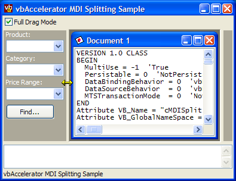

VB5 MDI Splitter Code (21K)
VB5 MDI Splitter Code (21K)
 VB5 MdiSplitter DLL (7K)
VB5 MdiSplitter DLL (7K)
 VB6 MDI Splitter Code (20K)
VB6 MDI Splitter Code (20K)
 VB6 MdiSplitter DLL (7K)
VB6 MdiSplitter DLL (7K)
 6 Feb 2003
6 Feb 2003
First Posted
 Get the Desktop Device Context
Get the Desktop Device Context
 Sophisticated Control Over Window Sizing and Moving
Sophisticated Control Over Window Sizing and Moving
 Restrict Mouse Movement to an Area of the Desktop
Restrict Mouse Movement to an Area of the Desktop
 Subclassing Without The Crashes
Subclassing Without The Crashes
 Moving Forms and Creating Resize Gripper Boxes
Moving Forms and Creating Resize Gripper Boxes
 Creating Single Pixel Dotted Lines
Creating Single Pixel Dotted Lines

Splitting Aligned Controls on MDI Forms
An easy to use class which allows controls aligned to the sides of MDI Forms to be Resized
This article provides an easy to use class which allows resizing of any aligned control on an MDI form. The code is also available packaged as a DLL for ease of debugging, as it uses a subclass which can make things awkward in the IDE.
How to Use It
Using this component is rather straightforward. First, drop a PictureBox onto your MDI form (here I'm assuming its called "picLeft" and has been aligned to the left of the MDI form. Then either reference the vbalMdiTab DLL if you're using that, or add cMDISplit.cls from the download and make a reference to the appropriate Subclassing and Timer Assistant. If you don't use the DLL version, note that debugging may become difficult if any part of your form is covered by the VB IDE.
Once that's done, then you simply create an instance of the class and attach it:
Private m_cSplitLeft as cMDISplit Private Sub Form_Load m_cSplitLeft.Attach picLeft End Sub
You can customise the splitter operation by setting the properties:
- FullDrag
Gets/sets whether the contents of the PictureBox are displayed and sized during dragging or not. Defaults to True. If your PictureBox contains a large number of control, or other items in the MDI Window are likely to flicker during resizing you may want to turn this off. - SplitSize
Gets/sets the size of the split area at the edge of the control, in pixels. Defaults to 4 pixels. - MinSize
Gets/sets the minimum size allowed for the PictureBox during splitting. - MaxSize
Gets/sets the maximum size allowed for the PictureBox during splitting.
Two Methods of Splitting; One Class
There are two techniques you can use to provide this type of splitting. The first is to make the exposed edge of the aligned control look like a Window edge to windows. This means that Windows then automatically shows the right cursor, and when you click, starts to resize the object, just like you would resize a Window. The second is to set the correct cursor whenever the mouse is over the splitting point, and when the user clicks to start tracking the mouse position and displaying where the window will end up. I'll cover these in turn.
Splitting Using Windows Resizing
Windows sends a WM_NCHITTEST message to all windows and controls whenever the mouse moves over them. The response to this message tells Windows how the area is expected to behave: whether its a client area, or a border and so on. This technique is described in more detail in the article Moving Forms and Creating Resize Gripper Boxes, but in this instance all we need to do is to tell Windows that the mouse is over a border when its at the exposed edge of the control and then the rest is done automatically. Which return value we provide depends on which side of the form the control is aligned to: if its aligned left, then the exposed edge is on the right and we want the right edge to behave like a right border on a window and so returning HTRIGHT provides the appropriate behaviour. Here's the fragment of code which does this:
Private Const WM_NCHITTEST = &H84&
Private Enum EHitTestAreas
HTERROR = (-2)
HTTRANSPARENT = (-1)
HTNOWHERE = 0
HTCLIENT = 1
HTCAPTION = 2
HTSYSMENU = 3
HTGROWBOX = 4
HTMENU = 5
HTHSCROLL = 6
HTVSCROLL = 7
HTMINBUTTON = 8
HTMAXBUTTON = 9
HTLEFT = 10
HTRIGHT = 11
HTTOP = 12
HTTOPLEFT = 13
HTBOTTOM = 15
HTBOTTOMLEFT = 16
HTBOTTOMRIGHT = 17
HTBORDER = 18
End Enum
...
Private Function getHitCode() As EHitTestAreas
Dim tR As RECT
Dim tP As POINTAPI
Dim eCode As EHitTestAreas
' Get Client Area of Control:
GetClientRect m_hWnd, tR
' Get Mouse Position:
GetCursorPos tP
' Change Mouse Position to Client Coordinates:
ScreenToClient m_hWnd, tP
' Modify the rectangle so it represents the
' resizing area for the control:
Select Case m_eAlign
Case vbAlignBottom
tR.bottom = tR.top + m_lSize
eCode = HTTOP
Case vbAlignTop
tR.top = tR.bottom - m_lSize
eCode = HTBOTTOM
Case vbAlignLeft
tR.left = tR.right - m_lSize
eCode = HTRIGHT
Case vbAlignRight
tR.right = tR.left + m_lSize
eCode = HTLEFT
End Select
' Check if the mouse is over the resizing area:
If Not (PtInRect(tR, tP.x, tP.y) = 0) Then
getHitCode = eCode
Else
getHitCode = HTNOWHERE
End If
End Function
...
Private Function ISubClass_WindowProc( _
ByVal hwnd As Long, ByVal iMsg As Long, _
ByVal wParam As Long, ByVal lParam As Long _
) As Long
Select Case iMsg
Case WM_NCHITTEST
' Full Drag:
Dim eCode As EHitTestAreas
eCode = getHitCode()
If (eCode = HTNOWHERE) Then
' Let Windows do standard processing:
ISubClass_WindowProc = _
CallOldWindowProc(hwnd, iMsg, wParam, lParam)
Else
' Tell Windows its a border:
ISubClass_WindowProc = eCode
End If
...
End Select
End Function
Once that's done, you just need a check to ensure that the object isn't made too large or too small. This is done by intercepting the WM_SIZING message, which allows you to modify the size of an object before Windows has actually moved it. More details of how to do this are provided in the article Sophisticated Control Over Window Sizing and Moving
.Splitting By Tracking Mouse Position
Its not always desirable to use the standard move commands to split the Window, since this can result in many windows being resized. Visual Studio and Visual Studio.NET instead display a splitter bar which shows where you're moving the item to, and only resize once the user has finished dragging the splitter.
For this method, you need to be able to do three things:
- Set the mouse pointer to a N-S or E-W arrow when the mouse moves over the resizing area.
- Respond to mouse clicks and then track the mouse until the button is released.
- Draw a splitter bar for the tracked mouse positions.
VB provides you with a MousePointer property for a control, but this isn't particularly effective when you only want to set the pointer for a particular area of a control. A more powerful technique is to respond to the WM_SETCURSOR message sent to each Window as the mouse moves. This method is also used in the article Animated Cursors in VB. Basically whenever WM_SETCURSOR is sent Windows checks to see if True or False is returned. If False is returned, then Windows applies the default cursor. Otherwise, it doesn't do anything and you can set your own cursor using the SetCursor API function. Here's a snippet of code demonstrating the WM_SETCURSOR processing used in this class:
Private Declare Function LoadCursorLong Lib "user32" _
Alias "LoadCursorA" ( _
ByVal hInstance As Long, ByVal lpCursorName As Long _
) As Long
Private Declare Function DestroyCursor Lib "user32" ( _
ByVal hCursor As Long _
) As Long
Private Declare Function SetCursor Lib "user32" ( _
ByVal hCursor As Long _
) As Long
Private Const WM_SETCURSOR = &H20
Private Const IDC_SIZENS = 32645&
Private Const IDC_SIZEWE = 32644&
Private Sub Attach()
...
Select Case m_eAlign
Case vbAlignTop, vbAlignBottom
m_hCur = LoadCursorLong(0, IDC_SIZENS)
Case Else
m_hCur = LoadCursorLong(0, IDC_SIZEWE)
End Select
End Sub
Private Function ISubClass_WindowProc( _
ByVal hwnd As Long, ByVal iMsg As Long, _
ByVal wParam As Long, ByVal lParam As Long _
) As Long
Select Case iMsg
...
Case WM_SETCURSOR
' non-full drag
eCode = getHitCode()
Select Case eCode
Case HTTOP, HTBOTTOM
SetCursor m_hCur
ISubClass_WindowProc = 1
Case HTRIGHT, HTLEFT
SetCursor m_hCur
ISubClass_WindowProc = 1
Case Else
ISubClass_WindowProc = CallOldWindowProc(hwnd, iMsg, wParam, lParam)
End Select
End Select
End Function
Responding to mouse clicks and tracking the mouse is straightforward. Normally, you'd use the VB Mouse events to do it, however, since this class is self contained and doesn't keep any references to its controls, it uses the equivalent Windows messages (WM_LBUTTONDOWN, WM_MOUSEMOVE, WM_LBUTTONUP). The only interesting point is that you can use the ClipCursorRect API to constrain the mouse within a certain area, which is described in the Tip Restrict Mouse Movement.
To draw the splitter bar itself, we need to be able to draw anywhere on the MDI form, or any of its children. This can't be achieved directly using VB commands, however it can be done by drawing onto the Desktop. The tip Get the Desktop Device Context describes how to get the desktop device context. Once you have this you can draw the splitter. Firstly, Visual Studio and most other Windows applications draw these splitter bars using a dithered brush, typically with 50% of the pixels set black. The article Creating Single Pixel Dotted Lines describes how to create a patterned brush like this. Once that's been created, then you need away of drawing onto the screen so that when you move the splitter it can be restored again. There are two ways of doing this: firstly, you could copy the area of the desktop underneath the splitter area and restore it again later, or secondly you can use the XOR drawing mode to draw onto the screen. When using XOR as a drawing mode, drawing the same thing twice removes the original. The second technique is used for this code.